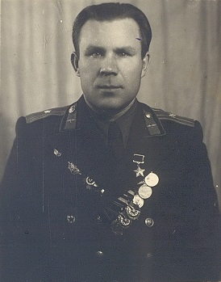
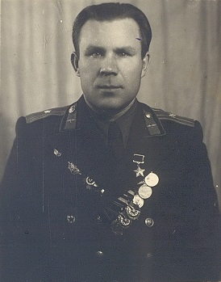

1. Давыд Константинович Курыжов
Давыд Константинович родился 9 марта 1920 года в деревне Кузнецово, ныне Богородского района Нижегородской области в русской крестьянской семье. Bynthtcysq afrn - после окончания школы Давид Константинович работал учителем начальной школы в деревне Касанихе.
Про него можно рассказать многое: и что в Красной Армии с 1939 года, и как успел до войны отучиться в Харьковском военно-штурманском училище и продолжил обучение в Энгельсской школе лётчиков, освоив пилотирование штурмовика Ил-2, и как, будучи отличником, был оставлен в школе работать инструктором.
Известно, что на протяжении двух лет отклоняли его прошение об отправке на фронт и только летом 1943 года рапорт был одобрен. К февралю 1945 года Курыжов совершил 95 вылетов, во время которых уничтожил 5 танков и 15 автомашин противника, много живой силы противника. Указом Президиума Верховного Совета СССР от 18 августа 1945 года за образцовое выполнение боевых заданий командования на фронте борьбы с немецко-фашистскими захватчиками и проявленные при этом мужество и героизм старшему лейтенанту Курыжову Давиду Константиновичу присвоено звание Героя Советского Союза.
После войны продолжил службу в военной авиации, три года был командиром эскадрильи, окончил Высшие офицерские лётно-тактические курсы. В 1952 году окончил Военно-политическую академию имени В. И. Ленина, был заместителем командира авиационного полка по политической части.
В 1954 году по состоянию здоровья подполковник Курыжов был уволен в запас.
Награжден орденом Ленина, двумя орденами Красного Знамени, двумя орденами Александра Невского, орденами Отечественной войны 1 и 2 степени, Красной Звезды, медалями.
Давыд Константинович проживал в Домодедово, а также некоторое время работал диспетчером в аэропорту. Умер 21 января 2003 года.
8 мая 2003 года в городе Домодедово на доме по улице Красной, где много лет жил Курыжов, открыта памятная доска с именем Героя.
В честь Давыда Курыжова в нашем городе названа одна из главных улиц в микрорайоне Южный и школа № 9.
https://ru.wikipedia.org/wiki/Курыжов,_Давыд_Константинович, http://dz-bogorodsk.ru/история-аэроклуба/